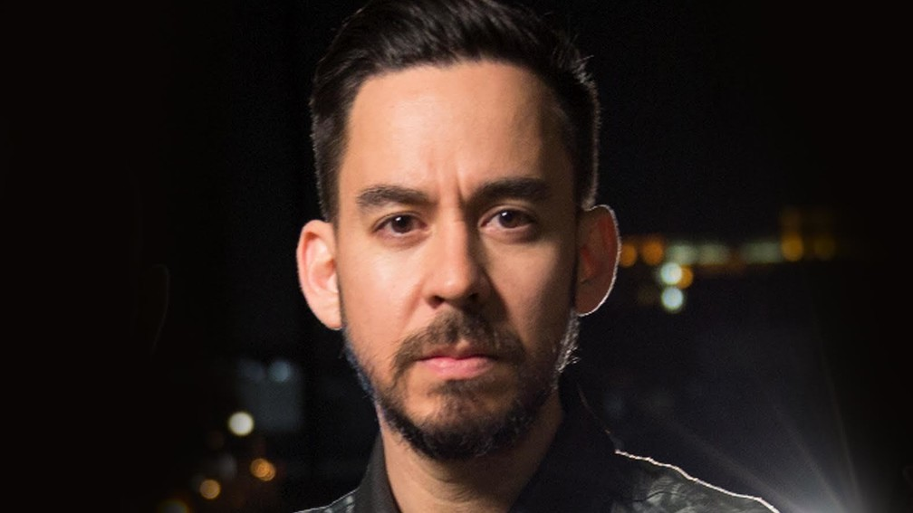

|Mike Shinoda|
Shinoda è nato nel sobborgo losangelino di Agoura Hill ed ha un fratello minore di nome Jason. Le origini del padre sono giapponesi, mentre la madre è di origini russe.
Shinoda decise di diventare musicista grazie ad un concerto eseguito in contemporanea dagli Anthrax e dai Public Enemy, a cui assistette nei primi anni novanta. Incoraggiato anche dalla madre, dopo quel concerto iniziò a seguire lezioni di pianoforte cominciando con la musica classica, per poi passare successivamente al jazz e infine all'hip hop; all'età di 14 anni iniziò a suonare la chitarra elettrica, oltre a praticare anche il rap.
Il 10 maggio 2003 Shinoda si è sposato con Anna Marie Hillinger, con la quale ha avuto tre figli.
Shinoda è uno dei cofondatori dei Linkin Park.